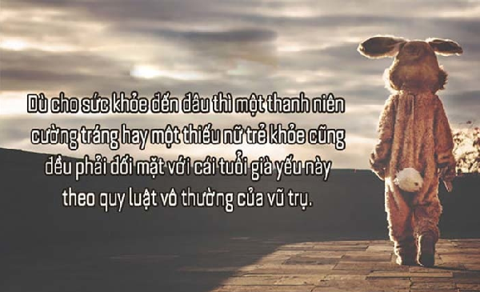

999+ STT hay chất như quả đất, CAP ngầu về tình yêu & cuộc sống

Ty Nguyen
CEO ❤️ AhaChat. Love babies & chatbot.
Nếu bạn đang tìm những stt hay chất như quả đất, stt cà khịa, dí dỏm, hay những cap ngầu về tình yêu và cuộc sống để đăng lên các trang mạng xã hội kèm những bức ảnh hoặc video thì bạn tìm đúng nơi rồi đó 😊. Bài viết dưới đây tổng hợp 999+ stt hay chất như quả đất, CAP ngầu về tình yêu & cuộc sống cho bạn tha hồ lựa chọn để chia sẻ lên các trang mạng xã hội.
Xem thêm:
- 9999+ câu STT hay, CAP - TUS hay bất hủ mọi thời đại được SHARE nhiều nhất
- 999+ STT buồn, CAP tâm trạng, TUS ngắn cực HAY mọi lứa tuổi
- 999+ STT, CAP, TUS thả thính ngắn siêu HAY, ngọt ngào, dễ thương
- Những câu nói hay về tình yêu: STT, CAP, TUS đủ thể loại buồn vui
- 999+ STT vui, CAP hài hước, thả thính vui nhộn về tình yêu, cuộc sống
- Những câu nói hay về tình bạn: STT, CAP, TUS buồn vui đủ thể loại
- 9999+ Tên nick Facebook hay, ngầu, đẹp, chất cho Nam & Nữ
- Full 1001+ Icon Facebook 2020 mới nhất & Các biểu biểu tượng FB HOT
STT về cuộc sống chất
“Mày có tiền mày hô mưa gọi gió. Tao không tiền, nhưng ta không sống chó với anh em. Ok.”"
“Một năm có cả ngàn bạn bè Đâu bằng một ngày, bạn làm anh em tôi.”
“ Chén rượu nhạt say tình ngang trái. Khói thuốc tàn phá nát đời trai.”
“-Điều khốn nạn nhất trong cuộc đời người đàn ông có lẽ là vì đàn bà mà trở nên ngu dại... Điều ngu dại nhất trong cuộc đời người đàn bà đó là biết người đàn ông đó khốn nạn mà vẫn yêu...”
"Muốn yêu đàn bà không ghen thì mua nồi cơm điện về mà yêu Vừa biết nấu cơm, lại không ghen, không biết cãi lời..!""
Đời dạy tao: Cứ giả khờ, giả ngu đôi khi lại tiếp thu được nhiều thứ.
Sự thật không phải lúc nào cũng đẹp. Những lời đẹp đẽ không phải bao giờ cũng thật…
Chơi dơ thì cút
Cái gì mua được bằng tiền thì cứ bỏ tiền mua, đừng đắn đo hơn thiệt. Hãy để dành tâm lực cho những cái mà tiền không mua được.
"Thân là củ cải cứ tưởng mình là nhân sâm Sống không có tâm thì đừng có giao giảng đạo đức..!"
Chúng ta chỉ sống một lần trên đời, vì vậy nếu có thể thì hãy tử tế với nhau, đừng vô tâm cũng đừng lừa dối…
“Lúc vinh quang trăm nghìn thằng bạn👬 Lúc hoạn nạn mới biết bạn là ai.”
Tiếc cho cái mặt xinh mà trí thông minh éo có Nhân cách méo mó- BẠN thích làm cờ.hó thế sao?
Khi mày yêu cuộc đời, cuộc đời cũng sẽ yêu mày đắm say. “Thích thì đến không thì đi..”
“Chi mong trong lúc nguy nan khốn khó Những người tao gọi là anh em, sẽ k từ bỏ tao.”
Vào đời va vấp lắm cái hay, lắm cái đau lòng lắm cái cay, tình cảm chân thành sao ít vậy, giả dối lừa nhau sao quá nhiều.
Tao không phải là 1 con người hoàn hảo Không đẹp rạng ngời và cũng không đẹp tuyệt vời Không nhà giàu cũng không làm màu Nhưng tao là tao – Và tao là độc nhất.
“Cuộc sống này Sao quá vô vị . Vì chữ ""Tiền"" mà họ kỳ thị nhau”
“Trước mặt xã giao, sau lưng xã dao Vâng siêu bạn. siêu khốn nạn.”
“Đừng cố biến tấu cuộc đời mày cho giống người khác 😉 Vì khi đó cách sống của mày sẽ lệch lạc đi rất nhiều.”
“BVS dội nước còn thấm Người loz gì nói mãi đép chịu thông.”
"Muốn chó ngừng sủa thì phải có xương Muốn được lòng thương thì phải có tiền..!"
“Nếu như người ta đã mất công nói dối 😏😊 ...Thì cứ sao mình k giả vờ tin cho họ vui.”
“ Tao sống không sai nên không ai làm tao phải ngại.😊 Cơm đường cháo chợ nhưng không bao giờ nịnh bợ 1 ai.👌”
“Nhà bạn giàu Bạn đâu cần vất vả Nhà tôi nghèo Phải làm tất cả để mưu sinh.”
“Nếu tình yêu là gia vị cho cuộc sống thêm mặn mà..😊 Thì thôi, mình ăn nhạt cho đỡ khát nước.”
Không tiền thì cạp đất mà ăn
“Trưởng thành không phải là chai lì với cảm xúc. 👉Trưởng thành chính là quen dần với những cảm xúc …”
“Ta không nên tiếc thời son trẻ, cái gì nó đến nó đến, nó đi nó đi 😊 Mà hãy nhìn lại quãng thời gian chông chênh đó, cuối cùng mình có gì.”
“Muốn có được bình yên hãy tự mình tạo ra Muốn có được hạnh phúc hãy tự mình chọn lấy ❤”
“Cuộc đời không bao giờ đưa ai vào ngõ cụt Chỉ có con người tự đưa nhau vào đường cùng.”
“Vạn người quen, có mấy người là bạn??? Trăm loại bạn, có mấy người là thân🙂”
“ Đừng bao giờ cúi đầu trước bất cứ ai Trừ khi bạn đang giúp họ đứng lên.”
"Đừng bao giờ níu kéo thứ không thuộc về mình Mà phải giật nhiệt tình chừng nào thuộc về mình mới thôi..!"
Bạn nói tôi không tốt, vậy bạn có đủ tốt để phán xét tôi chưa?
CAP về tình yêu chất, cực ý nghĩa
Tình yêu giống như một cơn gió. Chúng ta không thể nhìn thấy nhưng chúng ta có thể cảm thấy nó.
Ngoài em ra, không ai có thể làm anh bay bổng và vô tư như thế.
Em à! Dù phương trời xa cách, con tim anh mãi luôn hướng về em!
Em đánh cắp trái tim anh nhưng anh cho phép em giữ nó để dùng đấy.
Ở bên em anh mới thực sự là chính mình! Cảm ơn em đã đến bên đời anh!
Im lặng không phải là bỏ qua, không phải là xem như không có chuyện gì hết. Chẳng qua là chán rồi không thèm nói nữa, không muốn ồn ào nữa thôi.
Em mệt lắm! Khi em nói mà chẳng ai nghe, em buồn mà chẳng ai thấu, em cô đơn …. mà không có một người ở bên.
Em có biết bắt bản thân anh ngừng suy nghĩ về em khó khăn thế nào không?
Chỉ có hai lần duy nhất mà anh muốn ở bên em, đó là bây giờ và mãi mãi.
Ai cũng nói, “hãy nghe theo trái tim đi”, Tôi làm thế nó vỡ rồi.
Nước chỉ toả ánh sáng khi có mặt trời và em chính là mặt trời của anh.
Dù chuyện gì xảy ra, dù anh có làm gì, em thề sẽ luôn bên anh, yêu anh.
Ráng học đi sau này làm bác sĩ/ Khám lòng người coi giả tạo đến đâu.
Khi yêu sợ nhất là người ta vẫn nhận lời yêu nhưng trong tim họ mình không hề tồn tại.
Thế giới này rộng lớn là thế, đi đến cùng trời cuối đất cũng không gặp được anh. Nhưng thế giới này cũng thật nhỏ bé, gặp ai cũng thấy giống anh!
Đợi chờ bao lâu cũng chưa phải là điều đáng sợ. Đáng sợ nhất là đến cuối cùng mới chợt nhận ra. Điều mà mình đang chờ đợi hoàn toàn không xứng đáng.
Một cái ôm lặng lẽ có ý nghĩa hơn ngàn lời nói đối với một trái tim buồn.
Yêu anh, em cảm thấy mọi buổi sáng đều đáng để em thức giấc
Tôi yêu anh ấy! Cho dù đúng hay sai, chỉ cần anh ấy không buông tay, tôi cũng sẽ không buông tay.
Tạm biệt anh! Tôi sẽ tìm 1 người thật giống anh, nhưng mà thực tế cũng chỉ để tôi muốn quên anh.
Anh bàng hoàng nhận ra mình là kẻ thiếu muối… đang đắm đuối yêu một kẻ củ chuối như em
Khi không còn vị trí đặc biệt trong lòng ai đó. Tốt nhất ta nên chọn cách im lặng và ra đi.
Đôi khi chỉ là một khoảng trống của 1 người để lại. Mà cho dù có cả thế giới vẫn không thể lấp đầy.
Anh nhớ em! Nhớ ánh mắt, nụ cười, nhớ cả hơi thở của em!
Mình sinh ra là để cho nhau phải không em!
STT cà khịa đọc đến đâu thấm đến đó
Đẹp cũng chỉ để yêu, yêu kiều cũng chỉ để ngắm… Nhưng…Xấu mà đằm thắm thì say đắm cả cuộc đời!
Ở đâu cũng có anh hùng, Ở đâu cũng có thằng khùng thằng điên Thất tình tự tử đu dây điện. Điện giật tê tê chết từ từ"
Nếu anh là giọt nước mắt trong em, thì em sẽ khóc để anh lăn xuống chạm vào môi em. Nhưng nếu em là giọt nước mắt trong anh thì anh sẽ không bao giờ khóc bởi vì anh không muốn mất em.
Mấy đời bánh đúc có xương.Mấy đời gái đẹp lại thương trai nghèo
Kưa gái ko khó , cái khó là làm sao cho nó yêu mình. Lừa tình ko khó , cái khó là giữ sao cho mình đừng yêu nó J
Anh lớn lên dưới bầu sữa mẹ. Lại dại khờ trước bầu ngực của em!
Chưa đủ nhớ để gọi là yêu. Chưa đủ quên để thành xa lạ. Anh ám ảnh em giữa hai chiều nghiệt ngã. Nghiêng bên này lại chống chếnh bên kia.
Cứ tưởng chỉ có máu mới có vị tanh. Không ngờ lòng người cũng bẩn, tanh và long lanh ko kém.
Người đi một nửa hồn tôi mất …. MỘt nửa hồn kia vẫn bình thường
Tình chỉ đẹp khi còn dang dở Cưới nhau về tắt thở càng nhanh
Yêu anh bằng tất cả những gì em có. Để rồi anh đi theo NÓ như chưa từng có em"
Một buổi chiều gió mát … Vẽ hình em lên cát … Thì bị ăn một tát … Của một con bò khác … Nãy giờ đang quan sát …. Anh còn đang ngơ ngác … Liền ăn thêm một tát … Ôi tình yêu trên cát … Thật là chua và chát
Nếu em là trại thương điên thì anh sẽ là thằng điên mãi mãi
Tội Nghiệp Em – Một tuổi thơ thiếu tình thương…Nên giờ gặp thằng nào Em cũng thương với thích.
Giữa bao nhiêu người văn minh và hiểu biết…Vẫn có những bầy óc ngắn và não ít xoắn đến thảm thương.
"Tại sao muỗi hay đốt mình???… Vì mình Ngon từ Thịt Ngọt từ Xương Và Dễ Thương từ Tính Cách."
“Chim chích mà đòi xích mích với Chim Ưng. Tinh tinh mà đòi xinh hơn khỉ đột."
Một người buông tay,một người té…Một người né tránh, một người đau…
Yêu nhau trái ấu cũng tròn, ghét nhau đôi dép dẫu mòn cũng chia."
Đã yêu người khác – Tại sao lại lết xác vào cuộc đời của tôi !!!
Anh yêu em như Bác Hồ yêu nước. Mất em rồi như Pháp mất Đông Dương
Người đi một nửa hồn tôi mất!! Một nửa hồn kia …… đứng chửi thề!!!
MỘT nụ cười bằng MƯỜI thang thuốc bổ…Nhưng…Cười không đúng chỗ lấy RỔ mà hứng răng.
Hãy yêu một người có thể vì bạn mà làm tất cả … Chứ đừng yêu một người chỉ biết diễn tả tương lai !
Hoa mắt…chóng mặt…buồn HÔN
Thu đi để lại lá vàng, anh đi để lại cho nàng thằng cu, Mùa thu nối tiếp mùa thu, thằng cu nối tiếp thằng cu ra đời
Tôi thích mưa…nhỏ mà dài…Vì nó giống hệt cuộc đời Tôi…BI và HÀI.
STT chất, ngầu vui nhộn với bạn bè
Luôn cố gắng khiêm tốn, và hãy lấy làm…tự hào về điều đó
Hút thuốc không phải là ngầu, hút thuốc là để đi cầu đỡ hôi
Trong điền kinh thì tốt nhất là vừa chạy vừa ….rải đinh
Bản chất xấu xa nhưng do dòng đời xô đẩy trở thành người lương thiện.
Nghèo mà xài sang để sau này có giàu bớt bỡ ngỡ.
Tự hào là hai bàn tay trắng lập nên…vô số nợ.
Anh yêu em như Bác Hồ yêu nước. Mất em rồi như Pháp mất Đông Dương.
Hồi lớp mầm em yêu con bé hàng xóm học cùng lớp vì hai đứa hay mút kẹo chung và cùng…truồng cởi tắm mưa, nhưng lên lớp lá nó bỏ em vì em…thấp hơn nó.
Nếu anh là giọt nước mắt trong em, thì em sẽ khóc để anh lăn xuống chạm vào môi em. Nhưng nếu em là giọt nước mắt trong anh thì anh sẽ không bao giờ khóc bởi vì anh không muốn mất em.
Trên đời có 3 loại người, một loại biết đếm và một loại không biết đếm
Giang hồ hiểm ác, không bằng mạng lag thất thường.
“Giữa bao nhiêu người văn minh và hiểu biết… Vẫn có những bầy óc ngắn và não ít xoắn đến thảm thương :))”’
Giá xăng cũng như quần lót của phụ nữ , tụt mạnh xuống sẽ dễ bị … Sốc!
Một người buông tay,một người té…Một người né tránh, một người đau…
Thà khốn nạn công khai … Còn hơn giả nai thánh thiện
Đã xấu mà còn xa. Đã si đa mà còn đòi đi hiến máu.
Đừng bao giờ đua đòi bồ bịch khi mà không ai yêu bạn cả !
Thà khốn nạn công khai … Còn hơn giả nai thánh thiện.
Xăng có thể cạn, lốp có thể mòn……nhưng số máy và số khung vẫn không đổi !
Trong điền kinh thì tốt nhất là vừa chạy vừa ….rải đinh
Khi hắt xì mạnh bạn có thể làm gãy cả xương sườn…nhưng đừng cố nín vì có thể bạn sẽ bị đứt mạch máu đấy.
Nếu mỗi lần nhớ tới em anh được 500 đồng chắc giờ này anh đã vượt xa Bill Gates.
Vợ là địch, bồ bịch là ta. Khi chiến sự xảy ra ta về với vợ, nằm trong lòng địch lòng vẫn hướng về ta.
Cóc, Nhái, Ếch Ương mà hoang tưởng mình là Mị Nương chân dài =))
Nếu không có học sinh thì tất cả giáo viên đều mất dạy !
Chó Hoang mà cứ nghĩ mình là Bà Hoàng của xã hội ! Mèo Ghẻ mà cứ tưởng mình là kẻ Bề Trên của thiên hạ.
Điều tuyệt đối nhất chính là tất cả chỉ là tương đối
Đừng tự ti vì mình nghèo mà vẫn giỏi mà hãy tự hỏi tại sao mình giỏi mà mình vẫn nghèo.
Ta về ta tắm ao ta dù trong dù đục cũng là cái ao.
Nợ nần biến người ta thành……con nợ !
Tôi cao không bằng ai….nhưng được cái nằm xuống thì tôi dài 1m76 !
Một phụ nữ toàn diện là: Sáng diện, trưa diện, chiều diện, tối diện…
Học cho lắm tắm cũng xà bông.
Trúc xinh trúc mọc đầu đình…Em xinh em đứng một mình kệ em.
Đã xấu mà còn xa. Đã si đa mà còn đòi đi hiến máu.
Chỉ tay lên trời hận đời vô đối, chỉ tay xuống gối, đi ngủ cho rồi.
Vì tao chắc chắn là trên đời này không có gì là chắc chắn.
Dù gái hay trai….cứ lai rai mà đẻ !
Đằng sau nụ cười là nước mắt…đằng sau nước mắt là..cá sấu.
Khi bạn buồn hãy gọi cho tôi…tôi không hứa sẽ làm bạn cười…nhưng tôi hứa sẽ cười vào mặt bạn…
Đi một ngày đàng…mất 10.000 tiền cơm
Người ta mất 3s để nói tiếng yêu….mất 3 giờ để giải thích…mất 3 ngày để chấp nhận và mất cả đời để thực hiện và ân hận….!
Có cái nắng, có cái gió nhưng thiếu…cái đó thì ta xa nhau, người ơiiiiiiiiii
Rõ ràng là trên đời này không có gì là rõ ràng.
Một thằng ngốc xài máy vi tính nhận được thông báo sau “Cannot found the printer”…thế là hắn xoay cái monitor về phía máy in….thế đấy !
Tôi đã nói “không” với ma túy, nhưng tụi nó không chịu nghe.
Khổ quá, sướng không chịu nổi
Giang hồ hiểm ác anh không sợ, chỉ sợ đường về THẤY bóng em.
Luôn luôn nhớ rằng bạn là duy nhất…giống như những người khác
Ánh sáng đi trước âm thanh, vì thế, con người ta trông có vẻ thông minh cho đến khi ta nghe họ phát biểu!
Đừng nói yêu đến phát điên rồi vẫn cứ hồn nhiên phản bội :’) Đừng đua đòi theo xã hội sống bằng bộ mặt vô tội giả nai :-s
Nếu tình yêu là ánh sáng thì hôn nhân là hoá đơn tiền điện !
Mưa rơi ướt áo ướt quần Làm sao ướt được tinh thần dân đua
Một cô gái có tật bẩm sinh là đi tiểu lúc 6h30 sáng không hơn không kém….nhưng vấn đề là cô ta luôn thức dậy vào lúc 7h30……thế đấy !
Xin bạn hãy dành ra vài giây để đọc hết câu này, đọc tới đây thì cũng mất vài giây rồi, cảm ơn bạn ^__^
Đã ngu, không tiếp thu, lại còn bảo thủ.
Thuê bao quý khách vừa gọi hiện nằm ngoài vùng phủ sóng, nằm trong vùng phủ chăn và nằm cạnh một thuê bao khác.
Cướp giật đây, giơ tay lên ko tao báo công an!
Đằng sau nụ cười là nước mắt…đằng sau nước mắt là..cá sấu.
Chó Hoang mà cứ nghĩ mình là Bà Hoàng của xã hội ! Mèo Ghẻ mà cứ tưởng mình là kẻ Bề Trên của thiên hạ.
Câu nói “không” vẫn là biện pháp tránh thai hiệu quả nhất.
Cách tốt nhất để giữ lời hứa là đừng hứa gì cả.
Người ta có chí thì nên…còn mình có chí thì nên gội đầu.
TUS chất ngầu cực bựa của giới trẻ
Những tus chất ngầu cực bựa của giới trẻ tuy ngắn gọn sung tích nhưng vẫn thể hiện được độ bá đạo :) :)
Tình bạn sau tình yêu là phát đạn ân huệ cuả kẻ tử tù.
Bước chân dô quán đèn mờ, Ngồi gần con gái không sờ là ngu!! Thà rằng cắt tóc đi tu, Ngồi gần con gái ….. ngu sao không sờ!!
Lời nói chẳng mất tiền mua, lựa lời mà nói cho đừng đập nhau.
Trăm năm kiều vẫn là kiều. Nên lần đầu khó là điều tất nhiên.
Học hành như cá kho tiêu, kho nhiều thì mặn học nhiều thì ngu.
Tiền không thành vấn đề, vấn đề là không có tiền.
Không nói chuyện trong khi hôn.
Trên bước đường thành công không có dấu chân của kẻ lười biếng vì kẻ lười biếng thì có đi bộ bao giờ, nhìn kỹ thì sẽ thấy rất nhiều vết bánh xe của họ để lại.
Hoa mọc trên tuyết vẫn tươi, người trong đau khổ vẫn cười là anh.
Tóc em dài em cài hoa bí, Miệng em cười như ngựa hí trường đua.
Đá bồ là một nghệ thuật và người đá bồ cũng là một nghệ sĩ.
Dụng binh không gì quý bằng thần tốc, Dụng đàn bà không gì quý bằng tâng bốc.
Thiếu nữ là chữ viết tắt của….thiếu nữ tính.
Đàn ông miệng rộng thì sang, đàn bà miệng rộng tan hoang cửa nhà.
Vì tương lai con em chúng ta. Đánh chết cha con em chúng nó!!
Hãy cho tôi một điểm tựa, tôi….mỏi lắm rồi.
Một điều nhịn là chín điều nhục.
Người yêu không tự sinh ra và cũng không tự mất đi, mà nó chỉ chuyển từ tay thằng này sang tay thằng khác!!!
Còn….nói còn tát.
Học trò ngày nay quậy tới trời, 10 thằng đi học 9 thằng chơi. 3 thằng đến lớp 2 thằng ngủ, Còn lại thằng kia cùng gật gù.
Bạn đừng đi tìm người hoàn thiện, vì không có ai hoàn thiện cả. Chỉ khi bạn yêu họ, họ mới hoàn thiện.
Đằng sau người đàn ông thành công luôn luôn có một người phụ nữ……….nói rằng anh ta sẽ chẳng bao giờ làm được điều gì nên hồn cả.!!
Để yêu một người đã khó, để đá nó càng khó hơn.
Chúng ta yêu súc vật, vì….thịt chúng rất ngon.
Những cái hôn vụng trộm bao giờ cũng ngọt ngào nhất và bao giờ cũng tiềm ẩn những cái tát nảy đom đóm mắt nhất.
Đèn nhà ai nấy rạng, vợ thằng bạn thì cố mà chăm.
Người đi một nửa hồn tôi mất!! Một nửa hồn kia …… đứng chửi thề!!!
Kiếp sau xin chớ làm người, nguyện làm gia xúc cho nàng hốt phân.
Cá không ăn muối cá ươn. Con không ăn muối….thiếu iot rồi con ơi.
Tình yêu là chiếc quan tài, Không gian là chiếc áo dài màu đen. Kỷ niệm là lọ bình nhang, Tương lai là chiếc khăn tang quấn đầu.
Tiên học lễ hậu học….ăn.
Yêu nhau trái ấu cũng tròn, ghét nhau đôi dép dẫu mòn cũng chia.
Học mà không chơi đánh rơi tuổi trẻ, Chơi mà không học bán rẻ tương lai. 34. Thôi thì ta chọn cả hai, Vừa chơi vừa học tương lai huy hoàng.
Dù ai nói ngả nói nghiêng, chàng lười vẫn cứ triền miên chép bài.
Da thịt đàn bà được nuôi dưỡng bằng âu yếm, lòng dạ đàn bà được nuôi dưỡng bằng kinh phí.
Trước cổng nhà thờ,anh và em… Hai đứa hôn nhau,Chúa đứng xem… Giật mình Chúa bảo:này hai đứa! Hôn nhau như thế…Chúa cũng…thèm.
Ăn chọn nơi, chơi chọn hàng, lang thang chọn địa điểm.
Thà ngu vì thiếu iot, còn hơn là thiếu iôt mà vẫn ngu. (Hic nó nói cái gì thế)
STT buồn chất, tâm trạng
Nếu bạn thật sự quan trọng với một người, thì người đó sẽ luôn có thời gian dành cho bạn: không lý do, không dối trá và không thất hứa
Chia tay là khi: hai con người đi chung 1 đường nhưng rẽ về hai ngả, lặng lẽ nhìn nhau 1 chút rồi rời xa mãi mãi
Mặc dù nụ cười vẫn ở trên môi, nhưng cuộc sống của tôi chưa bao giờ là ổn cả
Nỗi buồn lớn nhất khi lúc nào cũng phải tỏ ra mình là người đang hạnh phúc. Nỗi đau lớn nhất là luôn phải cố gắng mỉm cười
Mặc dù nụ cười vẫn ở trên môi, nhưng cuộc sống của tôi chưa bao giờ là ổn cả
Đừng lợi dụng nhau lúc cảm thấy cô đơn, rồi ngoảnh mặt làm ngơ khi thấy mình đã ổn
Anh tồn tại trong em như một hình xăm. Xóa đc anh em như đứt từng mạch máu.
Lần cuối cùng em khóc vì anh. Em sẽ ngừng khóc và ngừng cả sự yêu thương
Chỉ cần khoảng cách đủ xa, thời gian đủ lâu thì dù có quen thuộc đến thế nào cũng sẽ trở lên xa lạ
Hạnh phúc thì chẳng được bao lâu mà nỗi đau thì in sâu không thể xóa
Cái lạnh nhất không phải là khi mùa đông sang, mà là sự vô tâm hời hợt từ người mà bạn đã từng xem là tất cả
Đêm nay, đêm mai, đêm sau nữa ….. Tôi nhớ 1 người chưa từng nhớ tôi
Có những người mình yêu mà không thể gần được. Và cũng có những người yêu mình nhưng không thể ừ được
Khi yêu … sợ nhất là người ta vẫn nhận lời yêu nhưng trong trái tim của họ chưa bao giờ xuất hiện hình bóng của mình.
Cố gắng để quên người mình yêu cũng giống như cách mà mình cố gắng nhớ một người chưa từng gặp
Tình yêu của anh nhẹ nhàng như gió, mong manh như nắng và để lại trong tim em “cay đắng ngút ngàn”
Không phải vết thương nào chảy máu mới là đau nhất. Có những vết thương không nhìn thấy máu mới thực sự là vết thương đau nhất
Quá khó để bắt buộc ai đó phải yêu mình. Và càng khó hơn khi ép bản thân mình phải ngừng yêu ai đó
Đôi khi chỉ một khoảng trống của anh để lại, mà cả thế giới ngoài kia cũng không thể lấp đầy khoảng trống đó trong tim em.
Yêu một người không yêu mình giống như ôm một cây xương rồng, càng ôm chặt càng làm bản thân mình đau hơn
Bây giờ tôi mới đau khổ nhận ra một sự thật là có những người chỉ có thể ở trong tim ta chứ không bao giờ có thể bước cùng ta đi đến cuối cuộc đời.
Người ta khóc ngất chưa chắc gì đã khổ, tôi miệng cười mà lệ đẫm trong tim
Thật đáng sợ nếu bỗng dưng một ngày mình thức dậy và nhận ra rằng mình không có ai và không còn điều gì để chờ đợi
Cảm ơn ai đó đã vô tâm hời hợt để rồi tôi biết mình nên dừng lại ở đâu
Đau khổ nhất là khi yêu ai đó, thương ai đó mà không thể ở bên, không thể nói ra nỗi lòng của mình với người ấy.
Bạn à … đừng ngốc như thế nữa nhé, không phải ai hứa rồi người ta cũng làm đâu
Có một thứ tình cảm âm thầm nhưng cháy bỏng, cồn cào. Vậy mà chỉ dám đứng từ xa để nhìn người ta đi cạnh một người khác … yêu đơn phương là thế đó.
Status đậm chất đời, triết lý

Sự tin tưởng giống như một miếng dán. Tháo nó ra một lần, có thể dán lại lần nữa nhưng nó sẽ không còn dính chặt như lần dán đầu tiên.
Nếu giọt nước rơi xuống hồ, nó sẽ biến mất. Nhưng nếu rơi xuống lá sen, nó sẽ tỏa sáng như một viên ngọc. Rơi giống nhau nhưng ở cùng ai mới là điều quan trọng.
“Bắt đầu từ nơi bạn đứng. Sử dụng những gì bạn có. Làm những gì bạn có thể” – Arthur Ashe
“Không có hoàn cảnh nào tuyệt vọng, chỉ có người tuyệt vọng vì hoàn cảnh.” -Khuyết danh
Khi cuộc đời cho bạn cả trăm lý do để khóc, hãy cho đời thấy bạn có cả ngàn lý do để cười.
Cuộc sống là sự cân bằng giữa cho đi và nhận lại.
Người đàn ông tình nguyện vì bạn mà theo đuổi mọi thứ chưa hẳn đã thật lòng yêu bạn, bởi vì thứ mà anh ta theo đuổi được không hẳn thuộc về bạn.
Phụ nữ không có sức hấp dẫn mới cảm thấy đàn ông trăng hoa. Đàn ông không có thực lực mới cảm thấy phụ nữ thực dụng!
Hãy trung thực trong những việc nhỏ bởi sức mạnh của bạn nằm ở đó.
Sự tin tưởng giống như một miếng dán. Tháo nó ra một lần, có thể dán lại lần nữa nhưng nó sẽ không còn dính chặt như lần dán đầu tiên.
Có lẽ cần phải trải qua tuổi thanh xuân mới có thể hiểu được tuổi xuân là khoảng thời gian ta sống ích kỷ biết chừng nào. Có lúc nghĩ, sở dĩ tình yêu cần phải đi một vòng tròn lớn như vậy, phải trả một cái giá quá đắt như thế, là bởi vì nó đến không đúng thời điểm. Khi có được tình yêu, chúng ta thiếu đi trí tuệ. Đợi đến khi có đủ trí tuệ, chúng ta đã không còn sức lực để yêu một tình yêu thuần khiết nữa.
Hồi ức luôn đặc biệt. Đôi khi, ta bật cười vì nhớ lại những ngày mình đã khóc và đôi khi ta bật khóc vì nhớ lại những ngày mình đã cười.
Khi con người ta vẫn còn trên đời, tưởng rằng còn nhiều thời gian, nhiều cơ hội. Thực ra cuộc đời là phép trừ, gặp nhau một lần, ít đi một lần.
Đừng sống cho người khác coi. Và đừng coi người khác mà sống!
Chúng ta hãy luôn gặp nhau với nụ cười, vì nụ cười là sự khởi đầu của tình yêu.
Một ngày không có tiếng cười là một ngày lãng phí.
Tin rằng bạn có thể làm một điều gì đó đồng nghĩa với việc bạn đã đi được nửa đường đến đó” – Theodore Roosevelt
Đừng chiến thắng người khác bằng tranh cãi. Hãy đánh bại họ bằng nụ cười của bạn. Bởi vì những người luôn muốn tranh cãi với bạn không thể chịu đựng được sự im lặng của bạn.
Sự mất bình tĩnh và mâu thuẫn với chính mình là điểm yếu lớn nhất của bản chất con người.
Phụ nữ, không cần phải nghiêng nước nghiêng thành, chỉ cần một người đàn ông nghiêng về cô ấy cả một đời!
Nếu giọt nước rơi xuống hồ, nó sẽ biến mất. Nhưng nếu rơi xuống lá sen, nó sẽ tỏa sáng như một viên ngọc. Rơi giống nhau nhưng ở cùng ai mới là điều quan trọng.
Người đàn ông tình nguyện vì bạn mà từ bỏ tất cả mới là người thật tâm yêu bạn, bởi vì những thứ mà anh ta vứt bỏ đều là những thứ thiết thực nhất gắn liền với cuộc đời anh ta.
Đừng khóc vì một việc đã qua, hãy cười vì mọi việc đang chờ phía trước.
Để tâm nên mới nghĩ ngợi linh tinh, không để tâm, đến nghĩ cũng chẳng buồn nghĩ!
Đừng chiến thắng người khác bằng tranh cãi. Hãy đánh bại họ bằng nụ cười của bạn. Bởi vì những người luôn muốn tranh cãi với bạn không thể chịu đựng được sự im lặng của bạn.
Đừng bao giờ thay đổi mình vì người khác. Nếu họ không thể tiếp nhận một con người nhiều điểm xấu là bạn, thì cũng không xứng để có được một con người với nhiều điểm tốt là bạn.
Hồi ức luôn đặc biệt. Đôi khi, ta bật cười vì nhớ lại những ngày mình đã khóc và đôi khi ta bật khóc vì nhớ lại những ngày mình đã cười.
Trong trò chơi của cuộc sống trước khi bạn nhận được bất cứ cái gì, bạn phải cho đi một thứ gì đó!
Chim yến sao biết được chí của chim ưng. Đối với người suốt đời cống hiến cho sự nghiệp vĩ đại, ngoài ngưỡng mộ ra, bạn còn có thể làm gì?
Hạnh phúc hay khổ đau trước sau ai cũng đều phải nếm vì đó là số phận. Phải học cách chấp nhận để mà lớn lên.
“Người quan tâm đến tôi, tôi sẽ quan tâm lại gấp bội! Người không quan tâm đến tôi, bạn dựa vào cái gì mà bảo tôi phải tiếp tục?"
“Đừng so sánh mình với bất cứ ai trong thế giới này. Nếu bạn làm như vậy có nghĩa bạn đang sỉ nhục chính bản thân mình.” – Bill Gates
Người ta có thể quên đi điều bạn nói, nhưng những gì bạn để lại trong lòng họ thì không bao giờ phai nhạt.
Cuộc sống cũng giống như đi xe đạp, nếu muốn thăng bằng bạn phải tiếp tục di chuyển.
Mọi thứ về tương lai đều không chắc chắn, nhưng có một điều chắc chắn: Thượng đế đã sắp đặt ngày mai của tất cả chúng ta. Hiện tại chúng ta phải tin tưởng Người và trong vấn đề này, bạn phải hết sức kiên nhẫn.
Mọi thứ về tương lai đều không chắc chắn, nhưng có một điều chắc chắn: Thượng đế đã sắp đặt ngày mai của tất cả chúng ta. Hiện tại chúng ta phải tin tưởng Người và trong vấn đề này, bạn phải hết sức kiên nhẫn.
STT chất, ngầu lòi bằng tiếng Anh
Never say all you know. And never believe all you hear. – Đừng bao giờ nói tất cả những gì bạn biết. Và đừng bao giờ tin tất cả những gì bạn nghe.
It’s better to know and be disappointed, than to never know and always wonder.! – Thà biết rồi thất vọng còn hơn không bao giờ biết và luôn băn khoăn.
You tell me you love me, but you show me you don’t. => Anh nói rằng anh yêu em, nhưng những gì anh thể hiện thì lại chẳng phải như vậy
An intelligent person is like a river,the deeper the less noise. – Một người thông minh sẽ như một dòng sông, càng sâu càng ít ồn ào.
Never say all you know. And never believe all you hear. - Đừng bao giờ nói tất cả những gì bạn biết. Và đừng bao giờ tin tất cả những gì bạn nghe.
There is a destiny that makes us brothers : None goes his way , everything that we send into the lives of others comes back into our lives. – Có một định mệnh biến chúng ta thành anh em: Không ai đi đường một mình, tất cả những gì ta gửi vào cuộc đời của người khác sẽ quay trở về cuộc đời của ta.
Lies don’t always end the relationship. Sometimes it’s the truth that ends it. => Đôi khi những lời dối trá không phải là nguyên nhân khiến mối quan hệ chấm dứt, mà lại là sự thật
True humor springs not more from the head than from the heart. It is not contempt; its essence is love. It issues not in laughter, but in still smiles, which lie far deeper. – Tính hài hước thực sự đến từ cái đầu không nhiều hơn đến từ con tim. Đó không phải là sự khinh miệt, tinh túy của nó là tình yêu thương. Nó không nhắm tới tiếng cười to mà nhắm tới những nụ cười yên lặng, thứ sâu sắc hơn nhiều.
Patience is not the ability to wait , but the ability to keep a good attitude while waiting. –Sự kiên nhẫn không đơn thuần chỉ là khả năng bạn đợi được trong bao lâu, mà là khả năng giữ được thái độ bình tâm trong lúc chờ đợi.
Do not go before me ; I may not follow. Do not walk behind me; I probably will not leads . Let’s go next and become my friend. – Đừng đi trước tôi; tôi có thể sẽ không theo. Đừng đi sau tôi; tôi có thể sẽ không dẫn lối. Hãy đi bên cạnh và trở thành bạn của tôi.
Love is like magic. Sadly, magic is mostly an illusion. => Tình yêu chính là phép màu. Buồn thay phép màu lại chỉ có trong trí tưởng tượng
If one day we can not be together , keep me in your heart , I'll be there forever. – Nếu có một ngày chúng ta không thể ở cùng nhau, hãy giữ tôi trong trái tim bạn, tôi sẽ ở đó mãi mãi.
Now that I can no longer see you, I realize how much I needed you => Khi không còn có thể gặp anh nữa, em mới nhận ra em cần anh thế nào
Love does not consist in gazing at each other but in looking together in the same direction. => Tình yêu không phải là nhìn nhau mà là cùng nhau nhìn về 1 hướng
I can not solve your behalf all the confusion , doubt or fear , but I can hear what you are expressing and the answers you seek. – Tôi không thể giải quyết giùm bạn tất cả những rắc rối, nghi ngờ hay lo sợ, nhưng tôi có thể nghe những điều bạn giãi bày và cùng bạn đi tìm lời giải đáp.
Love is like war easy to begin, But very hard to stop => Tình yêu và chiến tranh giống nhau, dễ để bắt đầu nhưng khó để kết thúc
You can not control every situation occurs. But you can completely control your thoughts and your attitude. – Bạn không thể kiểm soát được mọi tình huống xảy ra. Nhưng bạn hoàn toàn có thể kiểm soát được suy nghĩ và thái độ của mình.
If you leave without a reason, do not come back with an excuse. => Nếu đã ra đi không một lí do thì đừng quay lại với lời xin lỗi
A relationship is like a house. When a light bulb burns out you do not go and buy a new house, you fix the light bulb. => Một mối quan hệ cũng giống như ngôi nhà vậy. Khi có 1 cái bóng đèn bị hỏng, bạn không mua 1 ngôi nhà mới, bạn sửa cái bóng đèn.
If you can’t be a pencil to write anyone’s happiness,then try to be a nice eraser to remove someone’s sadness. – Nếu bạn không thể trở thành cây bút chì để viết nên niềm hạnh phúc cho một ai, thì hãy cố gắng trở thành một cục tẩy tốt để xoá đi nỗi bất hạnh của ai đó.
Some people choose to stay single simply because they are tired of giving everything and ending up with nothing. - Một số người chọn sống độc thân đơn giản vì họ quá mệt mỏi với việc cho đi tất cả mọi thứ và rốt cuộc chẳng được gì.
It is better to be hated for what you are than to be loved for what you are not. – Ghét những gì bạn có tốt hơn là yêu những gì bạn không có.
The longer you hide your feelings for someone, the more you fall for them. => Càng cố che giấu cảm xúc, lại càng yêu anh nhiều hơn
Distance doesn’t count if there is love in between. => Khoảng cách sẽ không là gì cả nếu giữa chúng ta có tình yêu
For you, I was a chapter. For me, you were a book. => Với anh, em chỉ là một chương trong cuộc đời. Nhưng với em, anh là cả cuốn sách
Mistakes made in life are our lessons in disguise. And sometimes, the best lessons learned, came from the worst mistakes made. – Những bài học của chúng ta được ngụy trang bởi những sai lầm trong cuộc sống. Và đôi khi, bài học hay nhất mà chúng ta được học, đến từ những sai lầm tồi tệ nhất. Thật ra quan trọng là sau những sai lầm ấy ta rút ra được điều gì.
Once I’m with you, nobody else matters. => Khi ở bên anh, chẳng còn ai quan trọng hơn nữa
when I fell hard you took a step back Without me. => Khi em đã dành trọn tình cảm mình cho anh thì anh lại lùi lại một bước…
I love to walk down the memory lane because I know I’ll run into you there. => Em thích trôi nổi trong kí ức của mình vì biết rằng em sẽ gặp anh ở đó
Peace does not mean the one where no noise, no trouble, and no toil. When we are in a storm, we still feel the calm of mind. That is the real meaning of peace.! – Bình yên không có nghĩa là 1 nơi không có tiếng ồn ào, không khó khăn, cực nhọc. Bình yên là ngay chính khi ta đang ở trong phong ba bão táp, ta vẫn cảm thấy sự an nhiên trong tâm hồn. Đó mới chính là ý nghĩa thực sự của sự bình yên.!
The pain I can not forget or I do not want to forget. => Nỗi đau này là do em không thể quên, hay vì em không muốn quên
When love is in your heart you’re happy doing the simple chores of life. => Trong tim có tình yêu, đời cũng vui hơn chút <3
Distance means so little when someone means so much. => Khoảng cách là vô nghĩa khi đặt cạnh một người có ý nghĩa với chúng ta
It’s better to know and be disappointed, than to never know and always wonder.! - Thà biết rồi thất vọng còn hơn không bao giờ biết và luôn băn khoăn.
There are days like that, quietly, not sad, not happy, slowly drift… the end of a day. – Có những ngày như thế, lặng lẽ, không buồn, không vui, chầm chậm trôi… Qua hết một ngày.
Sometimes a heart cannot afford to be “just friends” => Đôi khi con tim không chịu nổi việc “chỉ là bạn bè”
Life is like riding a bicycle. To keep your balance you must keep moving. – Cuộc sống giống như việc lái một chiếc xe đạp. Để giữ được thăng bằng, bạn phải tiếp tục di chuyển.
Do not ever forget me because if I thought you would forget me, I Will never leave. – Đừng bao giờ quên tôi, bởi nếu tôi nghĩ bạn sẽ quên tôi, tôi sẽ không bao giờ ra đi.
Some people choose to stay single simply because they are tired of giving everything and ending up with nothing.– Một số người chọn sống độc thân đơn giản vì họ quá mệt mỏi với việc cho đi tất cả mọi thứ và rốt cuộc chẳng được gì.
Sometimes what you want isn’t what you get, but what you get in the end is so much better than what you wanted. – Đôi khi những gì bạn muốn không phải là những gì bạn nhận được, nhưng những gì bạn nhận được cuối cùng tốt hơn rất nhiều so với những gì bạn muốn.
Hy vọng với những chia sẻ trên đây đã giúp bạn biết thêm được những stt chất nhất quả đất cùng những cap hay ngầu về tình yêu và cuộc sống. Qua đó, bạn nên lưu lại những stt hay hợp với tâm trạng bản thân để có thể đăng lên mạng xã hội khiến cho chúng bạn trầm trồ nhé!